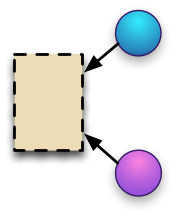

|  |
Shared Canvas Data Model1.0, 14 February 2013 |
The SharedCanvas data model specifies a linked data based approach for describing digital facsimiles of physical objects in a collaborative fashion. It is intended for use in the cultural heritage domain, although may be useful in other areas, and is designed around requirements derived from digitized text-bearing objects such as medieval manuscripts. Instances of the data model are consumed by rendering platforms in order to understand the relationships between the constituent text, image, audio or other resources. These resources are associated with an abstract Canvas, or parts thereof, via Open Annotations and the Annotations are grouped and ordered in OAI-ORE Aggregations.
This section describes the status of this document at the time of its publication. Other documents may supersede this document.
This document has been made available to the International Image Interoperability Framework group and the Digital Medieval Manuscript group for review, but is not endorsed by them. This is a final working draft, with a last call for comments. It is inappropriate to refer to this document other than as "work in progress".
Please send general comments about this document to the public mailing list: http://groups.google.com/group/sharedcanvas.
There are many digital repositories that maintain hundreds of thousands of page images of medieval manuscripts or other historically important, handwritten documents. These images act as surrogates for physical objects and are often the only way in which scholars and students can interact with the material, making it essential that the experience be rich with access to as much of the research about the physical objects as possible.
Repositories have two main tasks in this domain, digitization of the original and then providing access to the digital resources. While the former is a process specific to the institution, it was recognized that the latter would benefit greatly from a shared data model and implementations to facilitate the creation of software environments to consume that model. It was also recognized that the knowledge about the object is often maintained across multiple repositories, and any sustainable solution would need to embrace this aspect rather than continue with current "silo" based approaches, where a single repository holds all of the information.
The goal of the Shared Canvas data model is to provide a standardized description of the digital resources that are surrogates for culturally important, primarily textual physical objects in order to enable interoperability between repositories, tools, services and presentation systems. The resource being modeled is, therefore, a single physical item (a book, a manuscript, a painting) rather than the intellectual work embodied within it (the text or other content). The modeling requirements are drawn from presentation systems use cases only, and the data model does not attempt to include descriptive metadata about the intellectual work other than that which is necessary to display to the user as immediate context in a user interface.
Much of the effort to display this digitized material has been duplicated across institutions with each recreating very similar basic page-turning applications; with the SharedCanvas data model and jointly developed viewing environments, this duplicated effort may be repurposed to further digitization or better descriptive metadata. The approach also enables seamless interoperability between repositories who may hold related content, or even individual physical pages removed from their original context.
SharedCanvas adopts the principles of Linked Open Data and the Architecture of the World Wide Web, in recognition of the importance of this distributed information creation, management and ownership. The innovation described in this data model is a Linked Data Canvas, an abstract space that represents a page of the digitized item, which has resources painted on to it in a distributed manner via Annotations. The Canvas is given its own globally unique identifier, an HTTP URI, and thus additional information may be associated with the Canvas by anybody. It is the task of the rendering environments to determine if that information is appropriate for display to the current audience.
The association is done by Annotation, where the annotated resource is the Canvas and the "comment" is the resource to be displayed. The Annotations may be stored anywhere, and are collected together into Aggregations for ease of consumption. It is the role of the repository to both create and curate these annotations to provide trustworthy sets of information to the rendering environment.
The Shared Canvas model defines a single namespace, which includes all of the new classes, relationships and properties defined.
The ontology for the namespace is intended to be static and will always use the same namespace URI. All versions of the ontology will remain available from version specific URLs, and the namespace URI will provide access to the most recent version.
The following namespaces are used in this document:
Prefix Namespace Description sc http://www.shared-canvas.org/ns/ Shared Canvas Ontology cnt http://www.w3.org/2011/content# Representing Content in RDF dc http://purl.org/dc/elements/1.1/ Dublin Core Elements dcterms http://purl.org/dc/terms/ Dublin Core Terms dctypes http://purl.org/dc/dcmitype/ Dublin Core types exif http://www.w3.org/2003/12/exif/ns# Exif vocabulary oa http://www.w3.org/ns/oa# The Open Annotation model ore http://www.openarchives.org/ore/terms/ The Open Archives Object Re-Use and Exchange vocabulary rdf http://www.w3.org/1999/02/22-rdf-syntax-ns# RDF Vocabulary rdfs http://www.w3.org/2000/01/rdf-schema# RDF Schema Vocabulary
The key words "MUST", "MUST NOT", "REQUIRED", "SHALL", "SHALL NOT", "SHOULD", "SHOULD NOT", "RECOMMENDED", "MAY", and "OPTIONAL" in this document are to be interpreted as described in RFC 2119.
Examples used throughout the document will be conveyed as both a diagram and in the Turtle RDF format, and do not represent specific use cases with real resources. The Turtle examples do not provide namespace declarations, and should be considered to follow the Namespaces table in Section 1.1. Usage examples in SPARQL are given for each section, based on a requirement expressed in natural language.
rdf:type) is depicted as a straight black line with white arrow headcanvas1 is a specific instance of an Canvas, whereas 'sc:Canvas' is a classA Shared Canvas is a two dimensional rectangular space with an aspect ratio that represents a single logical view of some part of the physical item. For example, a book would have one Canvas per side of a page, a painting would have a single Canvas and a scroll might have either one very long Canvas representing the entire object, or multiple smaller ones if it made more sense to view it in sections.
Canvases are a crucial construction in the model, as they are the single point that can collect and layout multiple content resources that make up the facsimile. A single physical page may be depicted in multiple digitizations of various qualities, lighting conditions, size, format or other aspects, and the Canvas is the single point where these images are aligned. Equally, the image may contain more than just the page and thus part of the image should be aligned with the entire Canvas. Even if there is currently only one image, in the future there may be a second or further digitizations performed.
Canvases also allow pages to be modeled that have not been digitized, but about which information is known. This might include pages that are lost, destroyed or hypothetical, but have been transcribed either before the loss, or from another witness of the same text. It also allows books that have been partially digitized to be represented in their entirety for when the remaining images become available.
In the historical domain, there are many cases in which only fragments of the original page remain. These may be digitized and associated with the correct part of the Canvas that represents the original page. Multiple fragments are often digitized together, yet come from different original pages, and thus part of the image must be associated with part of a Canvas.
None of these use cases are able to be handled in a model in which Images rather than abstract Canvases are used for representing the aspect of the physical item.
A Canvas is the digital surrogate for a physical page which should be rendered to the user. Each Canvas has a rectangular aspect ratio, and is positioned such that the top left hand corner of the Canvas corresponds to the top left hand corner of a rectangular bounding box around the page, and similarly for the bottom right hand corners. The identifier for the Canvas is not an identifier for the physical page, it identifies the digital representation of it.
It is RECOMMENDED that the aspect ratio be expressed in such a way that alignment of images and other resources does not require floating point values to give a reasonable level of accuracy. Thus, values in the 1000 to 3000 range are more appropriate than in the 1 to 100 range.
Vocabulary Item Type Description sc:Canvas Class The Class for a Canvas, which is the digital surrogate for a physical page within the model exif:height Property The height of the Canvas, in no particular units. The height is given only to form part of the aspect ratio for the Canvas, along with the width.
Each Canvas MUST have exactly one height.exif:width Property The width of the Canvas, in no particular units. Along with height, this forms the aspect ratio of the Canvas.
Each Canvas MUST have exactly one width.rdfs:label Property The human readable label intended to be displayed to a user when viewing the Canvas.
Each Canvas MUST have at least one label. Multiple labels MAY be expressed in different languages and the rendering system should select an appropriate one.sc:hasAnnotations Relationship The relationship between a Canvas and a list of Annotations that target it or part of it.
Each Canvas MAY have one or more lists of related annotations.
<Canvas1> a sc:Canvas ;
exif:height 1400 ;
exif:width 1000 ;
rdfs:label "Page 1" .
A Zone is similar to a Canvas, as it is an abstract space with its own dimensions. Information may be associated with the Zone resource in order to manipulate all such resources as a single whole. This allows for the generation of dynamic user interface features such as manipulating folds in a piece of paper, or rotating a section of the page to be at the correct angle for ease of reading, without rotating the entire page. Zones may be associated with multiple Canvases, thus avoiding unnecessary repetition of the data.
Like Canvases, Zones have a height and width to provide an aspect ratio, and a label for choices and interpretation. Zones may also have a sc:naturalAngle property to define the rotation for ease of reading. They are associated with Canvases via Annotations, as described in the next section.
Please Note: Zones are an advanced modeling component, and while they are important for several important use cases, it should be expected that not every Shared Canvas implementation will support them.
Vocabulary Item Type Description sc:Zone Class The class for Zones, which represent part of one or more Canvases exif:height Property The height component of the aspect ratio of the Zone.
Each Zone MUST have exactly 1 height given.exif:width Property The width component of the aspect ratio of the Zone.
Each Zone MUST have exactly 1 width given.rdfs:label Property A human readable label for the Zone.
Each Zone SHOULD have 1 or more labelssc:naturalAngle Property The angle to which the Zone should be rotated to make the content easier to read for a user.
Each sc:Zone MAY have exactly 1 sc:naturalAngle property and MUST NOT have more than 1.
<Zone1> a sc:Zone ;
exif:height 400 ;
exif:width 600 ;
rdfs:label "Fold 1" .
It is important to allow the distributed association of content resources, such as images and text, with the Canvas. This allows a separation of concerns where one institution might provide images, another the transcribed text, and a third scholarly commentary about the page being represented. Following previous systems, an annotation paradigm is used to model this association, not only for transcription but also for any content resource that should be rendered as part of the digital facsimile of the page.
Each content resource is, typically, used as the body of its own Annotation, and the target of the Annotation (the resource the Annotation is about) is the Canvas. Thus an image of a page may be associated with the Canvas as depicted below.
It is important to become familiar with the Open Annotation model, as this section provides additional information and recommendations based upon it.
Using Annotations for both commentary and painting the Canvas reduces the number of technologies used, making implementation of the model easier and more consistent. As Annotations are resources in their own right, not part of the Canvas directly, it enables a distributed model of creation and management of resources. The creator of the Annotation is not required to be the owner of the resource being annotated, or painted, on to the Canvas, nor the owner of the Canvas, enabling a crowd-sourced model and for users to easily contribute their knowledge.
Disagreement in the reconstruction of a resource can easily be modeled using Annotations, as differing opinions are represented by different Annotations with different annotators. It is then up to the client to determine which is correct, or present the various options to the user if that is more appropriate.
Shared Canvas defines a new instance of oa:Motivation called sc:painting.
This motivation allows a client system to easily distinguish between Annotations that associate Content to be rendered as part of the facsimile and other Annotations, which might be used for scholarly commentary, moderation, discussion or many other motivations. These other Annotations should use appropriate motivations, as described in the
Open Annotation specification or by further communities.
Vocabulary Item Type Description sc:painting Instance [instance of oa:Motivation] The motivation that represents the distinction between resources that should be painted onto the Canvas, rather than resources that are about the Canvas. If the target of the Annotation is not a Canvas or Zone, then the meaning is left to other communities to define.
<anno1> a oa:Annotation ;
oa:motivatedBy sc:painting ;
oa:hasBody <content1> ;
oa:hasTarget <canvas1> .
<canvas1> a sc:Canvas ;
exif:height 1400 ;
exif:width 1000 ;
rdfs:label "Page 1" .
<image1> a dctypes:Image ;
dc:format "image/jpeg" .
A single Canvas can be used to render one side of a page, or perhaps an open scroll or newspaper, however multiple Canvases are required to create a page turning application in which a user can leaf through a book. The order in which these Canvases are displayed is, of course, crucial to ensuring a reasonable experience. In a graph model such as RDF order is not inherent in the serialization, such as is the case for XML, JSON or other data models, and thus the order must be explicitly described within the graph.
The Shared Canvas model starts from the Object Reuse and Exchange specification, which provides a method for ordering based on Proxy nodes, however we introduce a simpler method for the most common case of a single, linear order.
Resources in RDF may be given multiple classes, thus at the same time a resource may be both an ore:Aggregation and an rdf:List. Using this technique, it is possible to express a single linear order for the aggregated resources without the expense of minting Proxy resources. The aggregated resources may be of any type, and the Shared Canvas specification uses it for both Canvases and other Aggregations.
Please note that all of the predicates associated with lists and aggregations are, of course, also used. This means that the Aggregation must have an associated Resource Map that has a creator and a modified timestamp. Not all of these relationships and properties are depicted in the model diagram below for reasons of space.
Vocabulary Item Type Description ore:Aggregation Class A set of aggregated resources, with some associated metadata about the set rdf:List Class The class for ordering a set of resources, but without additional metadata
<aggr1> a ore:Aggregation, rdf:List ;
ore:aggregates <canvas1>, <canvas2>, <canvas3> ;
rdf:first <canvas1> ;
rdf:rest ( <canvas2> <canvas3> ) .
<resourceMap1> a ore:ResourceMap ;
ore:describes <aggr1> ;
dcterms:modified "2011-08-24T19:09:59Z" .
<canvas1> a sc:Canvas .
<canvas2> a sc:Canvas .
<canvas3> a sc:Canvas .
A Sequence is the ordered aggregation of Canvases that should be used by the client to display the Canvases in a particular order to the user. There may be multiple Sequences with different orders for the same or overlapping set of Canvases. This is because a single set of pages may be rebound in different orders over time, or to have Sequences with only the pages that currently exist rather than the full set of original pages, some of which are now missing or destroyed.
The Sequence must express that it is an rdf:List for clients and systems that do not recognize the Shared Canvas specific class.
Vocabulary Item Type Description sc:Sequence Class [subClass of ore:Aggregation] An ordered aggregation of Canvases for the purpose of rendering them in that order sc:hasContentRange Relationship A pointer to an sc:Range which contains the content bearing pages of the sequence.
If sc:hasContentRange is not supplied, then it defaults to the entire Sequence.rdfs:label Property A human readable label for the Sequence.
Each Sequence SHOULD have 1 or more labelssc:readingDirection Property "Left-to-Right" or "Right-to-Left" for the reading direction of this sequence for animating page viewers.
<Seq1> sc:Sequence, rdf:List ;
ore:aggregates <Canvas1>, <Canvas2>, <Canvas3> ;
rdf:first <Canvas1> ;
rdf:rest ( <Canvas2> <Canvas3> ) .
<ResourceMap1> a ore:ResourceMap ;
ore:describes <Se11> ;
dcterms:modified "2011-08-24T19:09:59Z" .
<Canvas1> a sc:Canvas .
<Canvas2> a sc:Canvas .
<Canvas3> a sc:Canvas .
The purpose of a Range is to provide a mechanism to select the Canvases and parts of Canvases that make up some intellectual entity. This might be based on the content, such as a story in an anthology, a verse of a poem or a chapter of a book, but equally may be used for any other purpose, such as identifying the flyleaves at the beginning or the non-contiguous set of pages that have illuminations or marginalia.
The basic structure of a Range is the same as a Sequence, but it may also aggregate segments of Canvases as well as entire Canvases. The segment is an oa:SpecificResource, with a source of the Canvas and a Selector that describes it. Please note that the Specific Resource is likely to have a UUID URN as its identifier, and thus should NOT be part of an ORE Aggregation, which states that the aggregated resources MUST have "protocol-based" URIs. We knowingly ignore this requirement, as the Specific Resource is a placeholder resource for the combination of the protocol-based Source (admittedly an abstract Canvas), and the selector which describes the desired part of that Canvas.
The Range should also link to the Sequence or Sequences which constitute the full set of Canvases, with the dcterms:isPartOf relationship.
Vocabulary Item Type Description sc:Range Class [subClass of ore:Aggregation] An ordered aggregation of Canvases for the purpose of rendering them in that order dcterms:isPartOf Relationship The relationship between the Range and the Sequences which express the complete set of Canvases. rdfs:label Property A human readable label for the Range.
Each Range SHOULD have 1 or more labels
<Range1> a sc:Range, rdf:List ;
dcterms:isPartOf <Seq1> ;
ore:aggregates <Part1>, <Canvas2>, <Canvas3> ;
rdf:first <Part1> ;
rdf:rest ( <Canvas2> <Canvas3> ) .
<ResourceMap1> a ore:ResourceMap ;
ore:describes <Range1> ;
dcterms:modified "2011-08-24T19:09:59Z";
dcterms:creator <Agent1>.
<Agent1> a dcterms:Agent ;
foaf:name "Creator Name" .
<Seq1> a sc:Sequence ;
<Part1> a oa:SpecificResource ;
oa:hasSource <Canvas1> ;
oa:hasSelector <Selector1> .
<Selector1> a oa:FragmentSelector ;
rdf:value "xywh=400,0,200,800" .
<Canvas1> a sc:Canvas .
<Canvas2> a sc:Canvas .
<Canvas3> a sc:Canvas .
In an ideal world, client applications would have access to all of the RDF triples describing the entire dataset. Unfortunately this is not feasible, as there may be many millions of triples distributed around the web relating content to the Canvases, providing comments or additional metadata. Thus it is necessary to provide lists of pointers to the Annotations, Sequences and Ranges that are required to build up the presentation.
An Annotation List is another use of the Ordered Aggregation construction, but instead of aggregating Canvases, it aggregates Annotations. The Annotations needed for a particular resource may be divided up amongst any number of Lists using any criteria for determining which list or lists they should be part of. Typical divisions are per Canvas or based on the content type of the Body resource, such that all of the Annotations that associate an Image with a Canvas would be together.
Vocabulary Item Type Description sc:AnnotationList Class An ordered aggregation of Annotations sc:forCanvas Relationship The relationship between the AnnotationList and the Canvas(es) which are the targets of the included Annotations.
Typically this relationship is used to describe the AnnotationList in a Manifest to allow clients to determine which lists should be retrieved.sc:forMotivation Relationship A shortcut relationship that implies that all of the Annotations in the list have that particular Motivation.
<AnnoList1> a sc:AnnotationList, ore:Aggregation, rdf:List ;
ore:aggregates <Anno1>, <Anno2> ;
rdf:first <Anno1> ;
rdf:rest ( <Anno2> ) .
<ResourceMap1> a ore:ResourceMap ;
ore:describes <AnnoList1> ;
dcterms:modified "2011-08-24T19:09:59Z";
dcterms:creator <Agent1>.
<Agent1> a dcterms:Agent ;
foaf:name "Creator Name" .
<Anno1> a sc:ContentAnnotation .
<Anno2> a sc:ContentAnnotation .
SELECT ?aggr WHERE { ?aggr a sc:AnnotationList ; ?aggr ore:aggregates <Anno1> }
=> <AnnoList1>
It might be important to group together multiple AnnotationLists to describe the common features, perhaps along with some additional Annotations. For example, a Layer could be used to group AnnotationLists of Text Annotations based on a common feature. This would enable the transcription annotations to be kept separate from edition annotations or translation annotations.
Layers are another instance of an Ordered Aggregation that may aggregate either Annotations or AnnotationLists, and MUST have an rdfs:label describing the purpose. All of the properties of AnnotationLists are also useful for Layers.
Vocabulary Item Type Description sc:Layer Class An ordered aggregation of Annotations or Annotation Lists.
The Manifest is what ties everything together. It is an Aggregation of the Layers, AnnotationLists and Sequences that make up the description of the facsimile. As such the Manifest is representative of the Book, Newspaper, Scroll or whatever physical object is being represented in the facsimile.
A Manifest MUST have an rdf:label giving a human readable name for it. This label is to be used for rendering purposes to inform the user what they are looking at.
Vocabulary Item Type Description sc:Manifest Class An ordered aggregation of Annotations sc:forCanvas Relationship The relationship between the AnnotationList and the Canvases which are the targets of the included Annotations.
Typically this relationship is used to describe the AnnotationList in a Manifest to allow clients to determine which lists should be retrieved.rdfs:label Property A human readable label for the Manifest.
Each Manifest MUST have 1 or more labels
<Manifest1> a sc:Manifest, ore:Aggregation ;
ore:aggregates <Seq1>, <Range1>, <AnnoList1> .
<ResourceMap1> a ore:ResourceMap ;
ore:describes <Manifest1> ;
dcterms:modified "2011-08-24T19:09:59Z";
dcterms:creator <Agent1>.
<Agent1> a dcterms:Agent ;
foaf:name "Creator Name" .
<Seq1> a sc:Sequence .
<Range1> a sc:Range .
<AnnoList1> a sc:AnnotationList ;
sc:forCanvas <Canvas1> .
Shared Canvas does not address collections of Manifests (or of other Collections) directly. Ordered or regular ore:Aggregations are recommended as the basis of describing collections in a manner that would be compliant with the Shared Canvas guidelines.
The Shared Canvas data model does not directly address search services, or full bibliographic descriptions of the objects that are being rendered by the digital facsimiles. However, it does provide hooks for pointing to related services and descriptions and recommendations for appropriate APIs. These services should then either self-describe or be described in the RDF as to what type they are.
However, a few aspects are universally useful for rendering applications to have access to. The Manifest (as representative of the object as a whole), each Sequence and Canvas may have agents, dates and locations associated with them. These are not the creator or dates for the Manifest, Sequence, Range or Canvas itself but instead for the object or part thereof which they are depicting. Thus, as the Manifest may (should!) have its own creator, we need to be careful to distinguish which we are talking about. Thus, we create three "denormalized" fields in the Shared Canvas namespace that contain labels intended only for display to the end user, and is likely not to be suitable for search or any other purpose.
More extensive bibliographic information should be referenced with the sc:hasRelatedDescription relationship.
Vocabulary Item Type Description sc:hasRelatedService Relationship The relationship between a resource in the Shared Canvas model and the endpoint for a related service. sc:hasRelatedDescription Relationship The relationship between a resource in the Shared Canvas model and a related description of the real world object. sc:agentLabel Property A name and possibly role of a person or organization associated with the physical object which is being represented by the Shared Canvas object. For example: "Froissart (author)" sc:dateLabel Property A date or date range and possiby role associated with the physical object. For example: "Illustrated c. 1200" sc:locationLabel Property A location and possibly role associated with the physical object. For example: "Paris, France (created)" sc:attributionLabel Property An attribution that must be displayed along with the resource. For example: "Held at A Library (NY)" sc:rightsLabel Property A rights or license statement, describing how the facsimile may be reused. dc:description Property A longer form description of the object. It may be associated with any of the resources in the model.
Services and Bibliographic Information Model:
<Manifest1> a sc:Manifest, ore:Aggregation ;
ore:aggregates <Seq1>, <Range1> ;
rdfs:label "Title" ;
sc:agentLabel "Name" ;
sc:dateLabel "Date" ;
sc:hasRelatedService <Service1> ;
sc:hasRelatedDescription <BibDesc1> .
This work by the IIIF is licensed under a Creative Commons Attribution-NonCommercial-ShareAlike 3.0 Unported License.